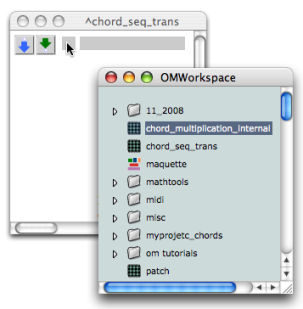
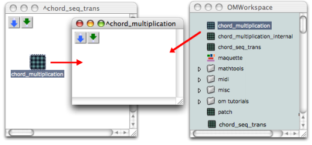
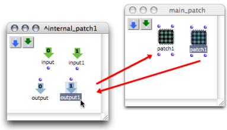
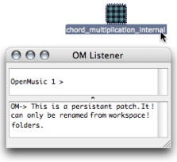

OpenMusic DocumentationHiérarchie de section : OM 6.6 User Manual > Visual Programming II > Abstraction > Abstraction Boxes > Standard Abstraction
OpenMusic DocumentationHiérarchie de section : OM 6.6 User Manual > Visual Programming II > Abstraction > Abstraction Boxes > Standard Abstraction
Navigation : page précédente | page suivante
Attention, votre navigateur ne supporte pas le javascript ou celui-ci à été désactivé. Certaines fonctionnalités de ce guide sont restreintes.
Standard Abstraction
This section deals with the integration of an existing patch  in another patch.
in another patch.
Adding a Patch From the Workspace to Another Patch
Procedure
To be used as an abstraction, a patch can be dragged from the workspace window to another patch editor .
The abstraction refers to the patch located in the workspace.

Consequently :
the abstraction and the patch in the workspace have the same name and icon,
the representation of the patch remains visible in the workspace : it hasn't been moved to the patch editor,
both items will be affected by subsequent operations performed in the abstraction.

No matter where the patch is open from, the editor displayed is the same.
Preserving the Master of a Patch
Using Duplicates
Several patch boxes with the same reference can coexist in a patch editor. Hence, the same function can be used at several steps of a program. When an abstraction is duplicated, another box, which refers to the same master patch, is created. Subsequent modifications to the reference patch will therefore affect both items.

One representation of patch1 has been added inputs. The other representation has been added outputs. Both items have been equally and simultaneously modified.
Managing Abstractions in the Workspace
Renaming an Abstraction

|
A blue patch can only be renamed in the workspace. |
Deleting a Patch from the Workspace
In a workspace, nothing shows that a blue patch is used as an abstraction : this must be taken into account when organizing it. A warning pops up if one attempts to delete a patch used as an abstraction in another patch. If it is deleted its reference in the other patch editor will be replaced by a dead box |
{kind=link}
Références :
Plan :
Navigation : page précédente | page suivante
A propos...(c) Ircam - Centre Pompidou